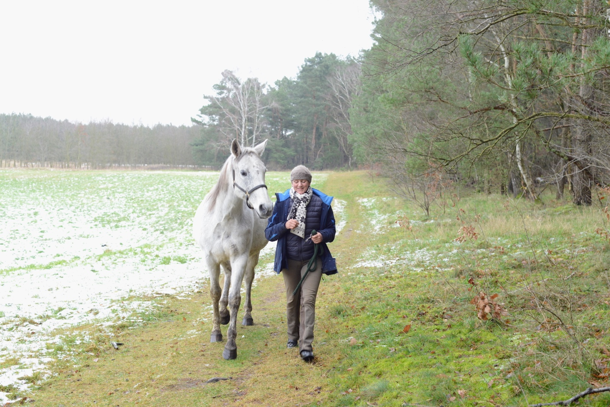

Intensiv in Hohenbüssow
Seit August 2019 wohne ich mit meinen zwei Pferden in Hohenbüssow.
Hier habe ich die Möglichkeit, Einzelstunden und Intensiv-Kurse zu geben – auch in Kombination mit der Arbeit am Pferd.
Anreise
Nach Hohenbüssow kannst du neben dem Auto auch mit dem Zug kommen.
Auf der Strecke nach Stralsund dauert die Fahrt von Berlin Hauptbahnhof nach Sternfeld etwa 2 Stunden.
Von Sternfeld kann ich dich mit dem Auto abholen. Die Fahrt nach Hohenbüssow dauert etwa 10 Minuten.
Alle Details können wir vorher telefonisch oder per Mail besprechen.
Kontakt aufnehmen
Feedback
"Der Kontakt mit Charlotte und ihren wunderschönen Pferden hat mich wieder zu mir selbst und ins Spüren zurückgebracht. Charlotte's Sein und ihre sanfte, feinfühlige und klare Art haben mich dabei sehr unterstützt.
Die Methodik der Alexandertechnik und das fachkundige Wissen, das Charlotte teilt, bereitet sehr gut auf den Kontakt mit den Pferden vor und hilft, sich selbst und auch die Pferde besser zu verstehen.
Wer eine Auszeit sucht vom Trubel der Stadt und ein Aufatmen der Seele, dem kann ich einen Aufenthalt an diesem schönen Fleckchen Natur mit Charlotte, Solana und Mila von Herzen empfehlen."
— Nadine (Yogalehrerin)